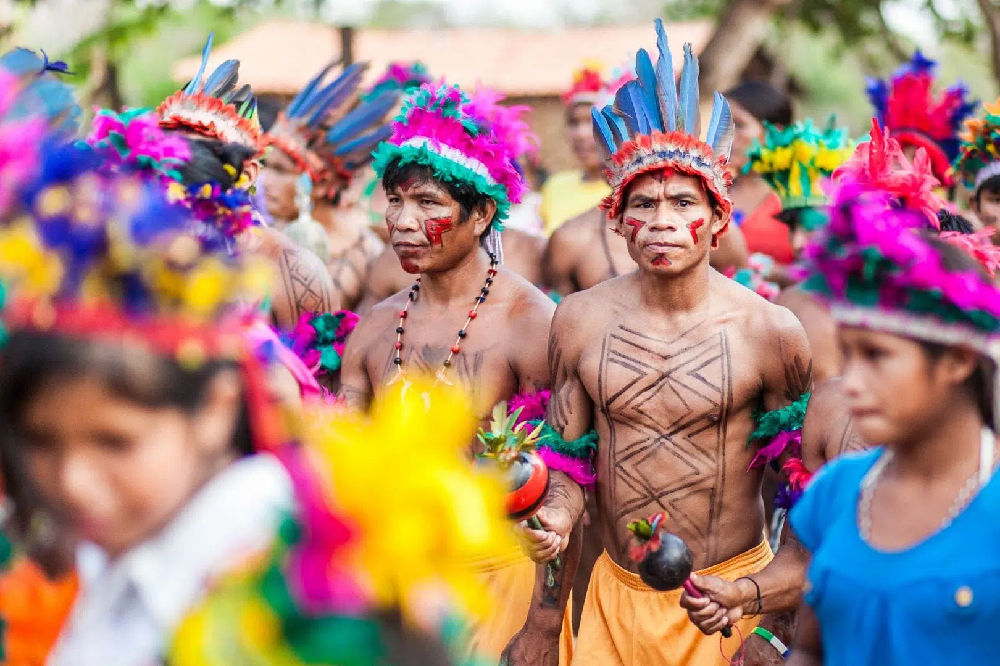

Além de guajajara, este grupo tem uma outra autodenominação mais abrangente, Tenetehára, que inclui também os Tembé. guajajara significa "donos do cocar" e Tenetehára, "somos os seres humanos verdadeiros". Às vezes, os guajajara traduzemTenetehára por "índio", excluindo desta categoria os grupos Jê, como os Canela, que são chamados àwà ("selvagens, bravos"). Não se conhece com certeza a origem do nome guajajara, mas provavelmente foi dado aos Tenetehára pelos Tupinambá. Tanto entre os próprios índios quanto na literatura científica, atualmente a denominação guajajara é mais usada do que Tenetehára.
A língua guajajara pertence à família tupi-guarani, sendo as línguas mais próximas o Asurini (do Tocantins), o Avá (Canoeiro), o Parakanã, o Suruí (do Pará), o Tapirapé e o Tembé, que lhe é muito semelhante. Os guajajara chamam sua língua de ze'egete ("a fala boa"). Ela é subdividida pelos lingüistas em quatro dialetos que são mutuamente inteligíveis, sem maiores complicações. Nas aldeias, o guajajara é falado como primeira língua, enquanto o português tem a função de língua franca, que é entendida pela maioria. A situação sociolingüística dos guajajara que moram nas cidades é desconhecida.
Todas as Terras Indígenas habitadas pelos guajajara estão situadas no centro do Maranhão, nas regiões dos rios Pindaré, Grajaú, Mearim e Zutiua. São cobertas pelas florestas altas da Amazônia e por matas de cerradão, mais baixas, sendo estas matas de transição entre as florestas amazônicas e os cerrados. Os guajajara nunca habitaram os cerrados vizinhos, região dos povos jê. Sua região mais antiga, historicamente conhecida, foi o médio rio Pindaré.
A partir do final do século XVIII e início do seguinte, expandiram seu território para as regiões dos rios Grajaú e Mearim, onde se estabeleceram pouco tempo antes da chegada dos brancos, disputando com vários grupos timbira as áreas de caça. Por volta de 1850, uma parte dos Tenetehára migrou para o norte e mais tarde passou a ser chamada de Tembé pelos regionais.
As Terras Indígenas Araribóia, Bacurizinho e Cana-Brava abrigam cerca de 85% da população guajajara [dados de 2002]. Em várias terras, eles não são os únicos habitantes indígenas: há grupos dos Guajá em Araribóia e Caru, dos Tabajara em Governador e Rio Pindaré e dos Guarani, Krenyê e Kokuiregatejê em Rio Pindaré. Em duas Terras Indígenas os Guajajara são minoria: em Governador, dos Gavião-Pukobyê, onde representam cerca de 36% dos habitantes, e em Krikatí, onde há uma comunidade cujos moradores não falam mais a língua indígena. Na Terra Indígena Geralda/Toco Preto, dos Kokuiregatejê, antigamente registrada como terra dos Guajajara, só morava um único Guajajara em 2000.
O número exato dos guajajara é desconhecido, pois as estatísticas da Funai são incompletas, ignorando várias aldeias. Segundo os dados da Funai, completados pelos do autor, existiam pelo menos 13.100 em 2000 apenas nas terras indígenas. O número dos Guajajara que vivem em cidades como São Luís, Barra do Corda, Grajaú, Imperatriz ou Amarante, no entanto, é desconhecido e nem há estimativas sobre ele.
Mércio Gomes estimou sua população, com base em cálculos comparativos, em 3.000 para a época dos primeiros contatos com os brancos. Em 1942 Charles Wagley e Eduardo Galvão a estimaram em 2.000 indivíduos. Depois Gomes calculou 2.500, 3.000 e 4.300 para os anos de 1942, 1953 e 1975 respectivamente. Faltam números exatos do crescimento atual, que é na faixa de 2,5% a 3,0% ao ano. Também faltam estatísticas sobre as taxas atuais de mortalidade infantil e de adultos, que não parecem ser menores que as da população rural regional, que ainda são altas.
Não há estatísticas referentes às uniões interétnicas e nem a seus descendentes. A forma mais comum destes casamentos não é, como se podia esperar, entre homens brancos e mulheres indígenas, mas o oposto, como são os homens que emigram para as cidades com maior freqüência, e são as mulheres solteiras que representam um tipo de "capital social" para as famílias, porque podem atrair genros e, com isso, trabalhadores masculinos para o grupo familiar.
Os Guajajara, ou Tenetehára, tiveram uma história de contato com os brancos marcada por resistência e exploração. O primeiro contato ocorreu em 1615 com uma expedição francesa, seguido por incursões escravagistas no século XVII. A instalação de missões jesuítas entre 1653 e 1755 ofereceu proteção, mas também trouxe servidão. Após a expulsão dos jesuítas, os Guajajara recuperaram parte da independência, mas foram progressivamente explorados no século XIX, enfrentando abusos e sistemática violência. O ápice da resistência foi a revolta de Alto Alegre, em 1901, liderada pelo cacique Cauiré Imana, contra a colonização dos capuchinhos, que resultou em grande repressão. Durante os anos 1960 e 1970, novos conflitos surgiram com a expansão de latifúndios e posseiros em suas terras, especialmente em Cana-Brava. Mesmo com a violência diminuindo, ainda existem tensões interétnicas com outros grupos, como os Canelas e os Guajá.
Os Guajajara, cuja principal atividade econômica é a lavoura, cultivam diversos produtos como mandioca, milho, feijão e abóbora. As roças são pequenas, variando entre 1,25 e 3,55 hectares por unidade familiar. Algumas aldeias possuem grandes roças comunais voltadas à comercialização de arroz e frutas. A pesca é comum nas aldeias ribeirinhas e, em algumas, açudes foram construídos para a pesca de subsistência e comercial. A caça tem diminuído, mas ainda é prática importante, especialmente com o controle das terras pelos próprios indígenas. Além disso, a coleta de produtos florestais, como mel, e a comercialização de artesanato, agricultura e até mesmo maconha, geram fontes de renda, mas também conflitos com a polícia.
A organização social é centrada em aldeias permanentes, que variam em tamanho e formato. O sistema de parentesco é flexível e as aldeias são organizadas em torno de famílias extensas, sendo a chefia muitas vezes instável e influenciada por fatores como relações com os brancos e capacidade de negociar com órgãos governamentais. A liderança é determinada tanto pela habilidade individual quanto pela base de apoio, o que torna a dinâmica política interna das aldeias complexa e, por vezes, marcada por rivalidades.